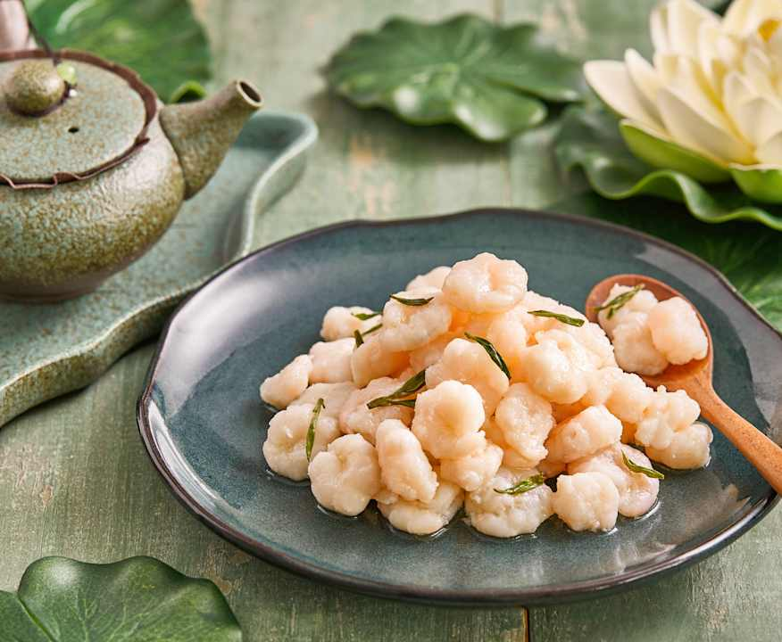

浙菜 · 浙江
LONGJING SHRIMP
龙井虾仁
茶香 · 清鲜
洁白的虾仁点缀着嫩绿茶叶，清香随热气散开。虾肉的鲜与龙井的香相遇，味道轻盈，口感弹嫩。
- 参考用时
- 约 25 分钟
- 参考份量
- 2 人份
- 烹饪方式
- 滑炒

BEHIND THE DISH
关于这道菜
龙井虾仁是具有杭州特色的菜肴，把当地茶文化与河鲜联系在一起。做这道菜不需要浓茶或厚重酱汁，少量茶汤与茶叶便能衬出虾仁本味。
准备食材
2 人份| 食材 | 用量 |
|---|---|
| 去壳虾仁 | 250 克 |
| 龙井茶叶 | 2 克 |
| 蛋清 | 约半个 |
| 玉米淀粉 | 5 克 |
| 盐 | 适量 |
| 料酒 | 5 毫升 |
| 食用油 | 20 毫升 |
调味准备
茶叶用约 80℃ 的热水 50 毫升泡开，取少量嫩叶与约 15 毫升茶汤备用。茶汤不宜太浓，以免发苦。
一步一步做
家常版本 · 5 个步骤准备虾仁
虾仁去除虾线，冲净后用厨房纸充分吸干水分。加入少量盐、料酒、蛋清和淀粉，轻轻抓匀，静置 10 分钟。
冲泡茶叶
用热水将龙井茶泡开，取少量舒展的嫩叶，滤出需要的茶汤。余下茶汤不必全部入菜。
滑炒虾仁
锅中放油，以中火加热，放入虾仁轻轻推散，炒至虾仁变色并逐渐卷起。
加入茶香
虾仁接近成熟时，加入茶叶与少量茶汤，轻轻翻匀，避免把虾仁搅碎。
熟透装盘
确认虾仁熟透，尝味后酌情补少量盐，收去多余水分即可装盘，不做厚芡。
用时为估计值，食材大小、锅具和火力都会影响实际时间；以主料熟透、口感合适为准。